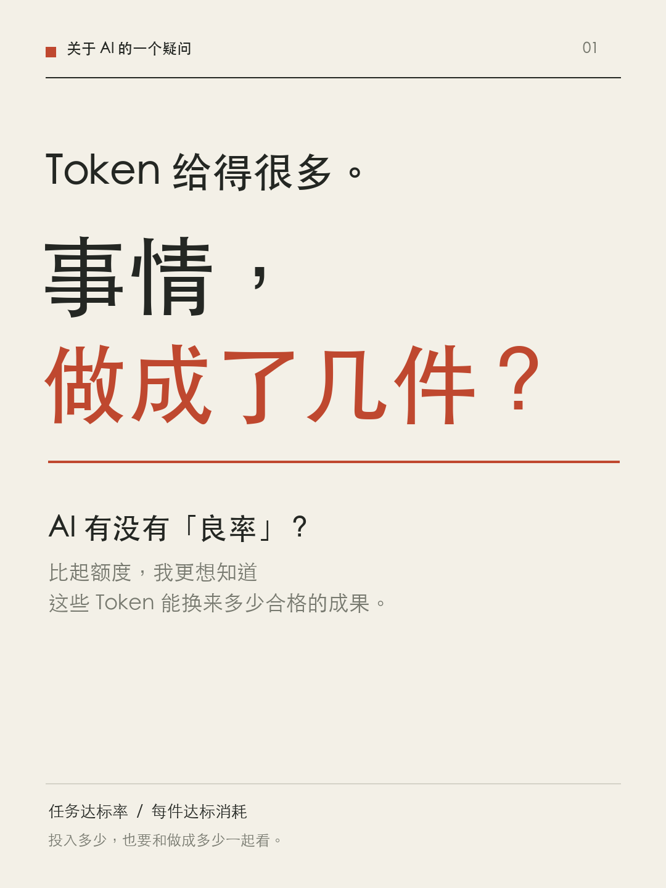
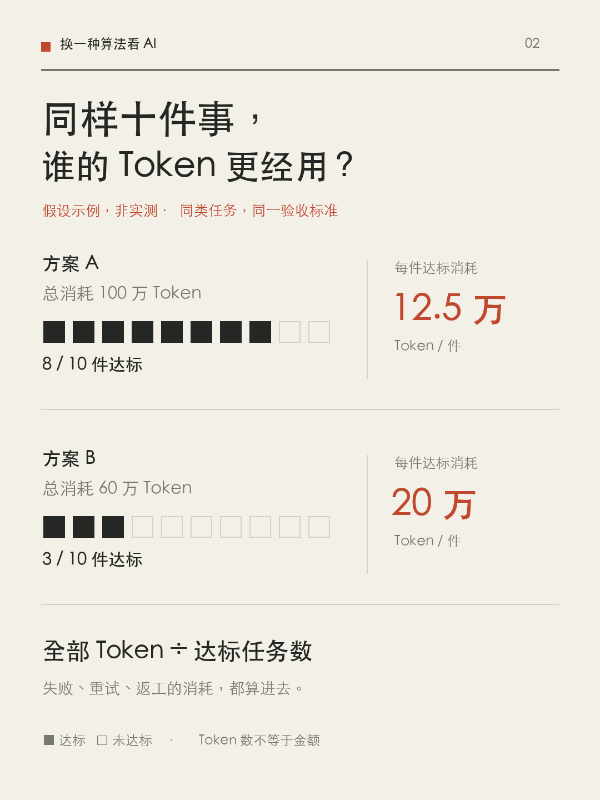

AI 有没有“良率”？比起给多少 Token，我更关心能做成多少事
额度之外，能否衡量 AI 做成一件事的全部投入？从任务分层验收到跨模型比较，讨论一种面向真实使用的评测方式。

有时候，跟 AI 合作了很久，token 用了不少，还是拿不到自己想要的结果。
所以最近我在想，我们评价一个 AI 产品时，是不是还少看了一个东西？
套餐给多少额度、能聊多少次，当然重要。但这些额度，到底能让我把多少件事做到合格？
同样是一百万 token，有的用来解决问题，有的花在反复解释、修改和重来上。只看消耗量，很难知道这段合作究竟有没有用。
我想到制造业里的“良率”。尤其是一次合格率，它关注产品能不能无需返工就达到质量要求。投广告也有类似的思路：除了看获得多少点击，还要看带来多少转化，以及每次转化花了多少。投入量与有效成果，需要放在一起看。
放到 AI 上，问题就变成：交给它十件同类的事，有几件能在一定预算内做到合格？把失败和返工也算进去，做成一件事平均消耗多少？
但一想到这里，就遇到了更难的问题：什么叫做成了？
一、先把“做成了”说清楚
修一个 bug，可以复现原来的故障，再检查修复后是否消失、其他功能是否仍然正常。这类任务，有机会通过外部结果验收。
写一篇文章就不一样了。事实没错、语句通顺，不一定意味着我愿意发出去。有的只需要改几句，有的要把整篇重写。简单打一个“成功”，会把这两种情况混在一起。
我想尝试把交付结果分成四档：直接可用、轻改可用、需要大改、最后放弃。再记录我实际修改和检查花了多少时间。“轻改”和“大改”也得事先说清楚，例如是否只是措辞调整，还是需要重写核心论证；不能看完哪个模型的答案，再替它调整标准。
这套分档适合描述使用体验，但不是天然客观。一个人愿意采用的文章，另一个人可能不喜欢。所以它更适合回答“对这个用户、这类任务有没有用”，不能直接升级成通用能力排名。若要做公开测试，就需要固定任务要求、匿名评审，并保留评审分歧。
还有一些任务，本来就在探索。做一次调研，最后发现一条路走不通，也可能是有价值的成果。此时验收的对象可以是一个事先约定的阶段：关键问题有没有被回答，证据能否回访，未知之处有没有清楚留下。
如果探索过程中需求变了，也应该记下变化。不能把用户临时增加的要求都算成模型返工，也不能为了宣布完成，悄悄降低原来的标准。
因此，我更愿意说“任务达标率”，而不是“token 达标率”。我们很难逐个判断 token 是否有用，但可以检查它们共同推进的任务到了哪一步。
二、同一件事，不同模型可能消耗不同
这带来另一个问题：完成同一件事，不同模型、不同 Agent 工作方式，可能花掉不同数量的 token。
为什么会不同？可能是推理和回答的长度不同，可能是查资料、调用工具的路径不同，也可能是反复读取上下文、出错重试，或者分词方式本身就不一样。只看到一个总数，还不能断定谁更聪明，或者谁在浪费。
我们可以先把账算清楚。
假设同样十个任务，采用同一验收标准。方案 A 总共用了 100 万 token，做成八件；方案 B 用了 60 万，做成三件。
包括失败尝试在内，A 每件达标任务平均消耗 12.5 万 token，B 是 20 万。这只是一个假设示例，非实测，却能说明为什么总消耗少，不一定意味着完成任务更有效率。

这里的数字是这批任务的平均消耗，不保证下一件任务也只需要这么多。如果一件都没有做成，就应报告“零成功”和已经消耗的资源，不能算成成本很低。
同时，token 数也不等于金额。输入、输出、缓存和可见的推理用量需要区分；不同模型的分词和价格也不同。服务商没有提供的部分应标成未知，不能当成零。跨模型比较时，token 用量可以帮助解释过程，实际费用则要按对应价格另算。
三、能不能把全过程放进基准测试？
我想看的测试，是让模型面对同一组真实任务，记录从收到要求到交付可用结果的全过程。
先固定交付要求，再设置几档预算：预算有限时能做成多少，增加投入以后，达标率又提高多少。跨模型时，金额预算可以作为一种共同尺度，token 和时间分别报告；在同一模型、同一计量口径内，也可以比较固定 token 预算。
最后看到的，可以是一条“预算与达标率”的关系，而不只有一个总分。有的方案可能很适合低成本简单任务；有的需要较高预算，才能处理复杂工作。这样的结果更有助于选择。
我还想同时看到人工接手的时间。AI 交付之后，人检查了多久、修改了多久，都是合作成本的一部分。等待时间与亲自投入的时间，也应该分开记录。
测试可以分成两条线。一条不允许中途人工帮助，测系统独立完成的能力；另一条允许有限纠正，但明确规定次数、时间和允许提供的信息，测人机合作后的交付效果。两条线不能混成同一个榜单，否则靠人修好的结果，也可能被算成模型独立完成。
如果想比较模型，就尽量保持工具、任务和工作流程一致；如果想比较用户实际使用的产品，就允许各自的工具和流程发挥作用，但把结果标成整套系统的表现。前者研究模型差异，后者回答用户选哪套工具，两者都有意义。
一次成功也不够。需要保留失败和超时，进行重复测试，报告波动，并按任务类型和难度拆开看。写文章、修代码、整理表格、做调研，各有自己的要求，把它们混成一个数字可能会掩盖差异。
四、这并不是从零开始的新发明
查资料后发现，已经有人在研究“每个成功任务的成本”。2024 年的《AI Agents That Matter》也明确讨论了同时优化准确率与成本的重要性，以及模型开发者和实际应用开发者需要不同的评测视角。
所以，我不想把“AI 良率”说成一个从未有人想到的新概念，也还没有做出一套经过验证的新基准。
我更想提出一个面向日常使用的问题：能不能把这些评测思路，变成用户看得懂、也与自己任务相关的交付记录？除了告诉我模型得了多少分、套餐给了多少额度，还能告诉我，它在什么条件下能把事情做好，失败时会消耗多少，又需要我补多少工作。
这也提醒我，“良率”评价的可能是整段协作。模型能力、需求表达、工具配置和验收方式，都会影响最后拿到的结果。分开记录，才有机会知道该改哪里。
我并不想把 token 越少当成越好。复杂的事值得多花一些。让我在意的是，持续增加的消耗，有没有把事情推进到真正可用。
以后看一个 AI 套餐，除了“给多少额度”，我还想看到另一个答案：
在我常做的这些事上，这些额度，有多大概率够把事情做好？如果还做不好，我要再付出多少时间和修改，才能真正用起来？
参考资料
- ASQ，First pass yield
- Google Ads，Conversion rate
- Google Ads，CPA
- Spirit Room，Cost per Successful Agent Task
- Kapoor 等，AI Agents That Matter（2024）
本文是基于个人使用感受的讨论与评测提案，数字例子不是模型实测。AI 协助资料检索、整理与配图。